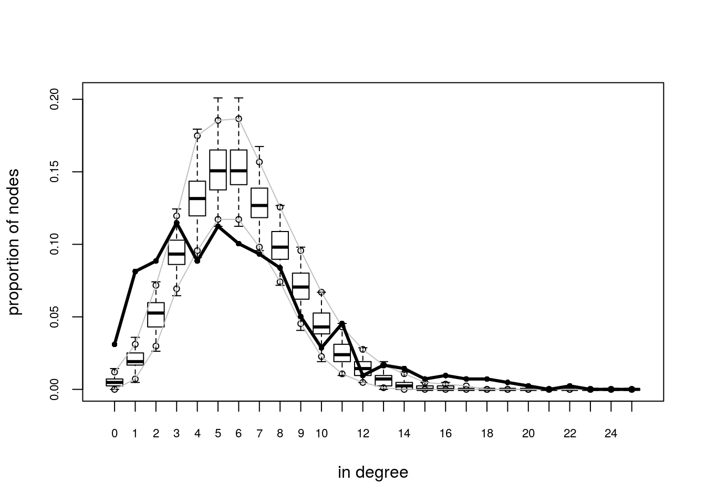
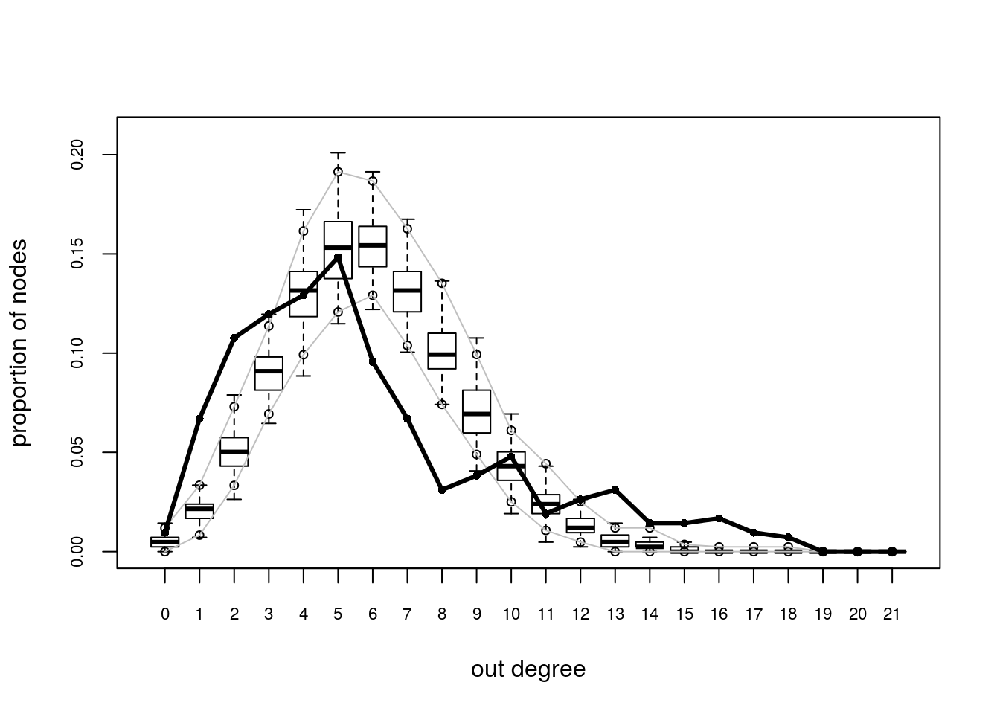
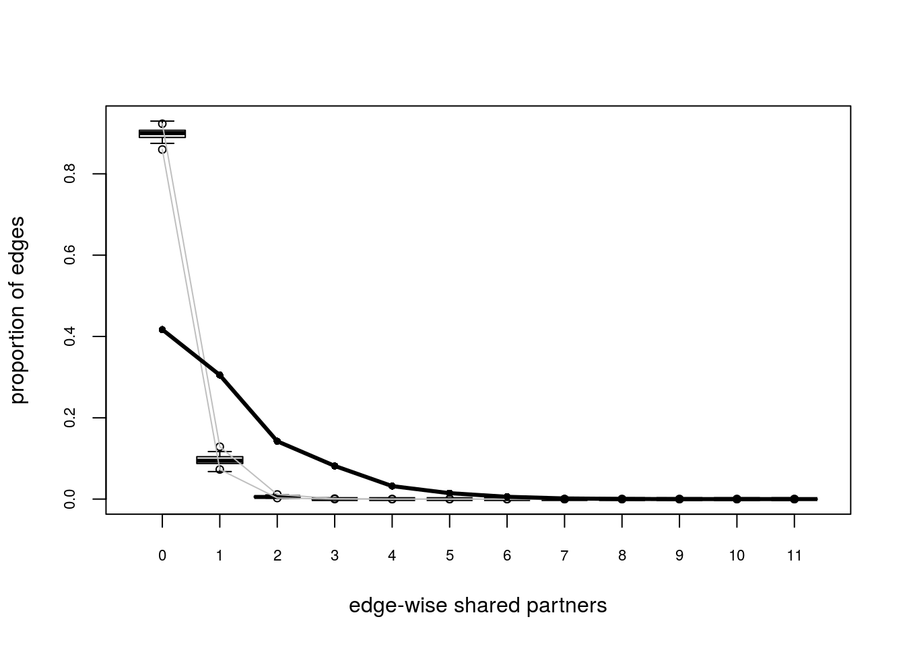
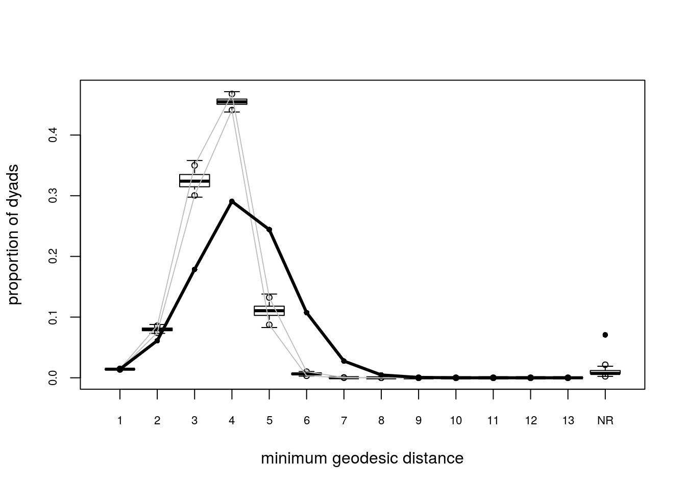
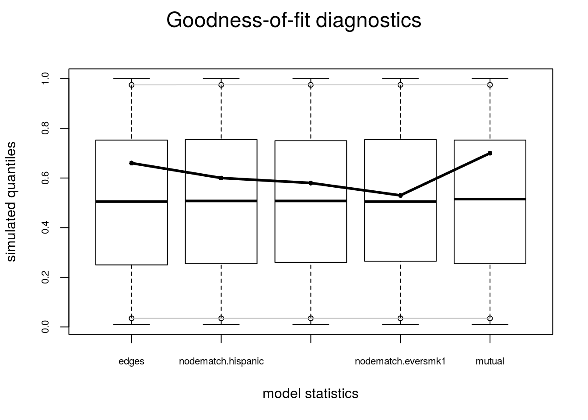

5.3 Model Goodness-of-Fit
Since ans0 is the one model which did best, let’s take a look at it’s GOF statistics. First, lets see how the MCMC did. For this we can use the mcmc.diagnostics function including in the package. This function is actually a wrapper of a couple of functions from the code package (Plummer et al. 2006). This is what is called under the hood:
Empirical means and sd, and quantiles: The summary statistics of all chains
summary(ans0$sample)## ## Iterations = 16384:1063936 ## Thinning interval = 1024 ## Number of chains = 4 ## Sample size per chain = 1024 ## ## 1. Empirical mean and standard deviation for each variable, ## plus standard error of the mean: ## ## Mean SD Naive SE Time-series SE ## edges -32.32 51.14 0.7990 3.557 ## nodematch.hispanic -26.81 39.08 0.6106 2.879 ## nodematch.female1 -28.03 44.92 0.7018 3.678 ## nodematch.eversmk1 -30.99 45.59 0.7123 3.420 ## mutual -14.35 20.47 0.3199 3.120 ## ## 2. Quantiles for each variable: ## ## 2.5% 25% 50% 75% 97.5% ## edges -128 -68 -35 1 75 ## nodematch.hispanic -100 -54 -27 -2 53 ## nodematch.female1 -115 -59 -29 2 65 ## nodematch.eversmk1 -116 -63 -33 1 59 ## mutual -55 -27 -16 -1 29Cross correlation:
coda::crosscorr(ans0$sample)## edges nodematch.hispanic nodematch.female1 ## edges 1.0000000 0.7842851 0.8454275 ## nodematch.hispanic 0.7842851 1.0000000 0.6875136 ## nodematch.female1 0.8454275 0.6875136 1.0000000 ## nodematch.eversmk1 0.8278077 0.6009145 0.6802329 ## mutual 0.6761018 0.5362456 0.6581912 ## nodematch.eversmk1 mutual ## edges 0.8278077 0.6761018 ## nodematch.hispanic 0.6009145 0.5362456 ## nodematch.female1 0.6802329 0.6581912 ## nodematch.eversmk1 1.0000000 0.6111560 ## mutual 0.6111560 1.0000000Autocorrelation:
coda::autocorr(ans0$sample)## [[1]] ## , , edges ## ## edges nodematch.hispanic nodematch.female1 ## Lag 0 1.0000000 0.8219687 0.8705328 ## Lag 1024 0.8897580 0.7344981 0.7849176 ## Lag 5120 0.6125344 0.5093458 0.5843733 ## Lag 10240 0.4944537 0.4263616 0.5010519 ## Lag 51200 0.2553223 0.2028499 0.2945153 ## nodematch.eversmk1 mutual ## Lag 0 0.8679762 0.6494130 ## Lag 1024 0.7854503 0.6389852 ## Lag 5120 0.5671411 0.5952745 ## Lag 10240 0.4775676 0.5432361 ## Lag 51200 0.2399202 0.3539473 ## ## , , nodematch.hispanic ## ## edges nodematch.hispanic nodematch.female1 ## Lag 0 0.8219687 1.0000000 0.7213715 ## Lag 1024 0.7273184 0.8790036 0.6501736 ## Lag 5120 0.4679330 0.5328138 0.4685746 ## Lag 10240 0.3548131 0.3719475 0.3735284 ## Lag 51200 0.2275837 0.2027639 0.2450665 ## nodematch.eversmk1 mutual ## Lag 0 0.6933735 0.5332499 ## Lag 1024 0.6242548 0.5214353 ## Lag 5120 0.4278511 0.4686949 ## Lag 10240 0.3486120 0.4199291 ## Lag 51200 0.2193803 0.2047705 ## ## , , nodematch.female1 ## ## edges nodematch.hispanic nodematch.female1 ## Lag 0 0.8705328 0.7213715 1.0000000 ## Lag 1024 0.7882288 0.6530082 0.9067042 ## Lag 5120 0.5848867 0.4701031 0.6960912 ## Lag 10240 0.5143759 0.4415248 0.6162009 ## Lag 51200 0.2943576 0.2717081 0.3756573 ## nodematch.eversmk1 mutual ## Lag 0 0.7737254 0.6670677 ## Lag 1024 0.7116355 0.6624944 ## Lag 5120 0.5435839 0.6422426 ## Lag 10240 0.4804301 0.6076076 ## Lag 51200 0.2807997 0.3770320 ## ## , , nodematch.eversmk1 ## ## edges nodematch.hispanic nodematch.female1 ## Lag 0 0.8679762 0.6933735 0.7737254 ## Lag 1024 0.7848037 0.6274016 0.7117444 ## Lag 5120 0.5581929 0.4628434 0.5535105 ## Lag 10240 0.4779814 0.3987335 0.4923237 ## Lag 51200 0.2846086 0.2285842 0.3260756 ## nodematch.eversmk1 mutual ## Lag 0 1.0000000 0.5893853 ## Lag 1024 0.9073188 0.5852995 ## Lag 5120 0.6557095 0.5659845 ## Lag 10240 0.5476628 0.5493667 ## Lag 51200 0.2846972 0.4000402 ## ## , , mutual ## ## edges nodematch.hispanic nodematch.female1 ## Lag 0 0.6494130 0.5332499 0.6670677 ## Lag 1024 0.6513036 0.5378887 0.6639583 ## Lag 5120 0.6380464 0.5446367 0.6412776 ## Lag 10240 0.6214549 0.5353477 0.6214122 ## Lag 51200 0.3647324 0.2297713 0.4240353 ## nodematch.eversmk1 mutual ## Lag 0 0.5893853 1.0000000 ## Lag 1024 0.5878446 0.9884291 ## Lag 5120 0.5696277 0.9396082 ## Lag 10240 0.5458346 0.8806506 ## Lag 51200 0.2897837 0.3673476 ## ## ## [[2]] ## , , edges ## ## edges nodematch.hispanic nodematch.female1 ## Lag 0 1.0000000 0.7750707 0.8724304 ## Lag 1024 0.8959790 0.6991308 0.7892434 ## Lag 5120 0.6254356 0.4780257 0.5724076 ## Lag 10240 0.4404273 0.3200836 0.4294502 ## Lag 51200 0.2308864 0.1640476 0.2233667 ## nodematch.eversmk1 mutual ## Lag 0 0.7819239 0.6194790 ## Lag 1024 0.7143139 0.6116771 ## Lag 5120 0.5252397 0.5843330 ## Lag 10240 0.3908589 0.5627992 ## Lag 51200 0.3403279 0.3877780 ## ## , , nodematch.hispanic ## ## edges nodematch.hispanic nodematch.female1 ## Lag 0 0.7750707 1.0000000 0.7208082 ## Lag 1024 0.6933293 0.8964603 0.6584405 ## Lag 5120 0.4852659 0.6185131 0.4865389 ## Lag 10240 0.3607465 0.4570165 0.3876918 ## Lag 51200 0.2184111 0.2426583 0.3035701 ## nodematch.eversmk1 mutual ## Lag 0 0.5456474 0.5213337 ## Lag 1024 0.4984152 0.5145885 ## Lag 5120 0.3617791 0.4935486 ## Lag 10240 0.2595658 0.4717713 ## Lag 51200 0.2699015 0.3286800 ## ## , , nodematch.female1 ## ## edges nodematch.hispanic nodematch.female1 ## Lag 0 0.8724304 0.7208082 1.0000000 ## Lag 1024 0.8017653 0.6690313 0.9110176 ## Lag 5120 0.6095160 0.5043152 0.6977288 ## Lag 10240 0.4673743 0.3829748 0.5448081 ## Lag 51200 0.3227987 0.2248235 0.3232075 ## nodematch.eversmk1 mutual ## Lag 0 0.6731106 0.6115803 ## Lag 1024 0.6279781 0.6047936 ## Lag 5120 0.4963274 0.5765856 ## Lag 10240 0.3980467 0.5530858 ## Lag 51200 0.4062673 0.4435604 ## ## , , nodematch.eversmk1 ## ## edges nodematch.hispanic nodematch.female1 ## Lag 0 0.7819239 0.54564737 0.6731106 ## Lag 1024 0.7048310 0.48979884 0.6105604 ## Lag 5120 0.4864786 0.30516884 0.4420611 ## Lag 10240 0.3476654 0.18767747 0.3312933 ## Lag 51200 0.1717941 0.03641337 0.1514472 ## nodematch.eversmk1 mutual ## Lag 0 1.0000000 0.5966418 ## Lag 1024 0.9203159 0.5870069 ## Lag 5120 0.6928700 0.5517682 ## Lag 10240 0.5543427 0.5363205 ## Lag 51200 0.4051086 0.2877537 ## ## , , mutual ## ## edges nodematch.hispanic nodematch.female1 ## Lag 0 0.6194790 0.52133369 0.6115803 ## Lag 1024 0.6181344 0.51940137 0.6086489 ## Lag 5120 0.5850524 0.49321390 0.5680945 ## Lag 10240 0.5267778 0.44682914 0.5069405 ## Lag 51200 0.1282355 0.05773453 0.1568190 ## nodematch.eversmk1 mutual ## Lag 0 0.5966418 1.0000000 ## Lag 1024 0.6009132 0.9826734 ## Lag 5120 0.5895537 0.9151384 ## Lag 10240 0.5528753 0.8372783 ## Lag 51200 0.3110325 0.3198872 ## ## ## [[3]] ## , , edges ## ## edges nodematch.hispanic nodematch.female1 ## Lag 0 1.0000000 0.7286851 0.7653768 ## Lag 1024 0.8701425 0.6250434 0.6593788 ## Lag 5120 0.5532752 0.3726507 0.4114312 ## Lag 10240 0.3792709 0.2291407 0.2819342 ## Lag 51200 0.1263857 0.1738039 0.1116028 ## nodematch.eversmk1 mutual ## Lag 0 0.8403781 0.6317173 ## Lag 1024 0.7506730 0.6255161 ## Lag 5120 0.5327467 0.5999073 ## Lag 10240 0.4192655 0.5592668 ## Lag 51200 0.1961950 0.2504959 ## ## , , nodematch.hispanic ## ## edges nodematch.hispanic nodematch.female1 ## Lag 0 0.72868515 1.0000000 0.50111552 ## Lag 1024 0.62730728 0.8675990 0.42079182 ## Lag 5120 0.40526678 0.5577184 0.24703166 ## Lag 10240 0.28843483 0.3818085 0.18144815 ## Lag 51200 0.04435087 0.1064335 0.01527911 ## nodematch.eversmk1 mutual ## Lag 0 0.6508997 0.4387059 ## Lag 1024 0.5843063 0.4332236 ## Lag 5120 0.4540849 0.4196131 ## Lag 10240 0.3896065 0.3962962 ## Lag 51200 0.1621884 0.1104146 ## ## , , nodematch.female1 ## ## edges nodematch.hispanic nodematch.female1 ## Lag 0 0.76537675 0.50111552 1.0000000 ## Lag 1024 0.65672139 0.41443939 0.8672803 ## Lag 5120 0.40459965 0.20374156 0.5584743 ## Lag 10240 0.28883468 0.09726804 0.3958318 ## Lag 51200 0.07687284 0.07114294 0.1470283 ## nodematch.eversmk1 mutual ## Lag 0 0.58540195 0.6364623 ## Lag 1024 0.50920947 0.6303865 ## Lag 5120 0.33572992 0.6060308 ## Lag 10240 0.25958351 0.5557550 ## Lag 51200 0.06843075 0.1704989 ## ## , , nodematch.eversmk1 ## ## edges nodematch.hispanic nodematch.female1 ## Lag 0 0.8403781 0.6508997 0.5854020 ## Lag 1024 0.7473610 0.5789305 0.5156466 ## Lag 5120 0.5207861 0.4012611 0.3435639 ## Lag 10240 0.3970581 0.3226432 0.2656331 ## Lag 51200 0.2014317 0.2239727 0.1308759 ## nodematch.eversmk1 mutual ## Lag 0 1.0000000 0.6193419 ## Lag 1024 0.8990832 0.6161748 ## Lag 5120 0.6522335 0.5988452 ## Lag 10240 0.5162238 0.5670618 ## Lag 51200 0.2849473 0.3104405 ## ## , , mutual ## ## edges nodematch.hispanic nodematch.female1 ## Lag 0 0.6317173 0.4387059 0.6364623 ## Lag 1024 0.6273792 0.4354956 0.6314778 ## Lag 5120 0.5785931 0.3856113 0.5851342 ## Lag 10240 0.5246617 0.3376531 0.5338971 ## Lag 51200 0.1809254 0.1913834 0.2329805 ## nodematch.eversmk1 mutual ## Lag 0 0.6193419 1.0000000 ## Lag 1024 0.6144173 0.9873210 ## Lag 5120 0.5695775 0.9341269 ## Lag 10240 0.5190540 0.8654326 ## Lag 51200 0.1982159 0.4177271 ## ## ## [[4]] ## , , edges ## ## edges nodematch.hispanic nodematch.female1 ## Lag 0 1.00000000 0.67290782 0.7963774235 ## Lag 1024 0.84452232 0.54545325 0.6779810704 ## Lag 5120 0.46245349 0.22234846 0.4044528924 ## Lag 10240 0.27748812 0.05584143 0.3191300208 ## Lag 51200 0.01398245 -0.05751708 0.0009401853 ## nodematch.eversmk1 mutual ## Lag 0 0.81109405 0.5043317 ## Lag 1024 0.70588782 0.4956837 ## Lag 5120 0.44860361 0.4434758 ## Lag 10240 0.31412151 0.3869787 ## Lag 51200 0.04395957 0.1453689 ## ## , , nodematch.hispanic ## ## edges nodematch.hispanic nodematch.female1 ## Lag 0 0.67290782 1.0000000 0.54020161 ## Lag 1024 0.54361833 0.8254552 0.43849491 ## Lag 5120 0.22063113 0.3544722 0.20155099 ## Lag 10240 0.06487559 0.1292919 0.12350389 ## Lag 51200 -0.04263724 0.1271527 -0.05216263 ## nodematch.eversmk1 mutual ## Lag 0 0.41421126 0.18938092 ## Lag 1024 0.32881855 0.18303230 ## Lag 5120 0.13666734 0.13951649 ## Lag 10240 0.02975769 0.09319685 ## Lag 51200 -0.08914960 -0.03052313 ## ## , , nodematch.female1 ## ## edges nodematch.hispanic nodematch.female1 ## Lag 0 0.7963774 0.54020161 1.0000000 ## Lag 1024 0.6866629 0.44782245 0.8676058 ## Lag 5120 0.3805378 0.19571567 0.5413447 ## Lag 10240 0.2135821 0.06128063 0.3860391 ## Lag 51200 -0.1038172 -0.09361460 -0.0488699 ## nodematch.eversmk1 mutual ## Lag 0 0.63624875 0.43870157 ## Lag 1024 0.56274254 0.42915171 ## Lag 5120 0.36210585 0.36253061 ## Lag 10240 0.22379296 0.30603104 ## Lag 51200 -0.07368724 0.02328391 ## ## , , nodematch.eversmk1 ## ## edges nodematch.hispanic nodematch.female1 ## Lag 0 0.81109405 0.4142113 0.63624875 ## Lag 1024 0.69818401 0.3236662 0.55441977 ## Lag 5120 0.42356060 0.1052627 0.37561810 ## Lag 10240 0.26505375 -0.0108905 0.29649077 ## Lag 51200 0.04806457 -0.1041468 0.01866324 ## nodematch.eversmk1 mutual ## Lag 0 1.0000000 0.5527542 ## Lag 1024 0.8833914 0.5451537 ## Lag 5120 0.5922046 0.5103593 ## Lag 10240 0.4325324 0.4749615 ## Lag 51200 0.1453505 0.2511205 ## ## , , mutual ## ## edges nodematch.hispanic nodematch.female1 ## Lag 0 0.50433172 0.18938092 0.4387016 ## Lag 1024 0.49106344 0.17944168 0.4330371 ## Lag 5120 0.43884568 0.11464054 0.4138038 ## Lag 10240 0.35394592 0.02072383 0.3793707 ## Lag 51200 0.05994241 -0.20559828 0.1145074 ## nodematch.eversmk1 mutual ## Lag 0 0.5527542 1.0000000 ## Lag 1024 0.5440590 0.9744782 ## Lag 5120 0.5057209 0.8660835 ## Lag 10240 0.4416049 0.7510162 ## Lag 51200 0.1838198 0.3309428Geweke Diagnostic:
coda::geweke.diag(ans0$sample)## [[1]] ## ## Fraction in 1st window = 0.1 ## Fraction in 2nd window = 0.5 ## ## edges nodematch.hispanic nodematch.female1 ## 1.2158 1.9078 1.0548 ## nodematch.eversmk1 mutual ## 1.6781 0.4969 ## ## ## [[2]] ## ## Fraction in 1st window = 0.1 ## Fraction in 2nd window = 0.5 ## ## edges nodematch.hispanic nodematch.female1 ## 1.451 4.109 2.268 ## nodematch.eversmk1 mutual ## 1.108 1.478 ## ## ## [[3]] ## ## Fraction in 1st window = 0.1 ## Fraction in 2nd window = 0.5 ## ## edges nodematch.hispanic nodematch.female1 ## 1.1445 0.3823 -1.4859 ## nodematch.eversmk1 mutual ## 1.9638 0.3500 ## ## ## [[4]] ## ## Fraction in 1st window = 0.1 ## Fraction in 2nd window = 0.5 ## ## edges nodematch.hispanic nodematch.female1 ## -0.07832 1.71294 0.62034 ## nodematch.eversmk1 mutual ## -1.35149 -1.05875(not included) Gelman Diagnostic:
coda::gelman.diag(ans0$sample)## Potential scale reduction factors: ## ## Point est. Upper C.I. ## edges 1.23 1.60 ## nodematch.hispanic 1.13 1.36 ## nodematch.female1 1.13 1.35 ## nodematch.eversmk1 1.21 1.58 ## mutual 1.42 2.08 ## ## Multivariate psrf ## ## 1.41
If we called the function mcmc.diagnostics this message appears at the end:
MCMC diagnostics shown here are from the last round of simulation, prior to computation of final parameter estimates. Because the final estimates are refinements of those used for this simulation run, these diagnostics may understate model performance. To directly assess the performance of the final model on in-model statistics, please use the GOF command: gof(ergmFitObject, GOF=~model).
—-
mcmc.diagnostics(ans0)
Not that bad! First, observe that in the plot we see 4 different lines, why is that? Well, since we were running in parallel using 4 cores the algorithm actually ran 4 different chains of the MCMC algorithm. An eyeball test is to see if all the chains moved at about the same place, if we have that we can start thinking about model convergence from the mcmc perspective.
What would be an indicator of no-convergence? Well, if you see something like this:
# Computing and printing GOF estatistics
ans_gof <- gof(ans0)
ans_gof##
## Goodness-of-fit for in-degree
##
## obs min mean max MC p-value
## 0 13 0 2.05 6 0.00
## 1 34 1 8.51 17 0.00
## 2 37 9 21.64 34 0.00
## 3 48 25 38.73 58 0.16
## 4 37 36 53.98 69 0.02
## 5 47 46 64.97 86 0.02
## 6 42 46 62.93 80 0.00
## 7 39 31 55.46 75 0.02
## 8 35 27 41.75 57 0.38
## 9 21 18 28.76 42 0.16
## 10 12 8 18.03 31 0.10
## 11 19 4 10.94 24 0.06
## 12 4 0 5.19 13 0.78
## 13 7 0 2.66 7 0.02
## 14 6 0 1.48 5 0.00
## 15 3 0 0.55 3 0.04
## 16 4 0 0.22 2 0.00
## 17 3 0 0.10 1 0.00
## 18 3 0 0.04 2 0.00
## 19 2 0 0.00 0 0.00
## 20 1 0 0.00 0 0.00
## 21 0 0 0.01 1 1.00
## 22 1 0 0.00 0 0.00
##
## Goodness-of-fit for out-degree
##
## obs min mean max MC p-value
## 0 4 0 2.12 6 0.26
## 1 28 2 8.84 18 0.00
## 2 45 11 21.15 33 0.00
## 3 50 27 37.98 50 0.02
## 4 54 37 54.49 72 0.92
## 5 62 48 63.90 84 0.78
## 6 40 51 64.48 88 0.00
## 7 28 42 54.98 70 0.00
## 8 13 27 42.19 62 0.00
## 9 16 17 29.46 45 0.00
## 10 20 8 18.07 29 0.72
## 11 8 2 10.20 21 0.56
## 12 11 1 5.32 16 0.06
## 13 13 0 2.54 6 0.00
## 14 6 0 1.46 6 0.02
## 15 6 0 0.47 4 0.00
## 16 7 0 0.21 2 0.00
## 17 4 0 0.08 2 0.00
## 18 3 0 0.04 1 0.00
## 19 0 0 0.02 1 1.00
##
## Goodness-of-fit for edgewise shared partner
##
## obs min mean max MC p-value
## esp0 1032 2024 2244.16 2373 0
## esp1 755 174 240.27 395 0
## esp2 352 5 15.08 75 0
## esp3 202 0 0.50 6 0
## esp4 79 0 0.00 0 0
## esp5 36 0 0.00 0 0
## esp6 14 0 0.00 0 0
## esp7 4 0 0.00 0 0
## esp8 1 0 0.00 0 0
##
## Goodness-of-fit for minimum geodesic distance
##
## obs min mean max MC p-value
## 1 2475 2301 2500.01 2625 0.68
## 2 10672 12158 14250.49 15716 0.00
## 3 31134 49068 58045.75 63937 0.00
## 4 50673 75648 78732.72 80928 0.00
## 5 42563 12954 17973.98 26706 0.00
## 6 18719 346 1021.26 2004 0.00
## 7 4808 1 30.06 182 0.00
## 8 822 0 0.41 7 0.00
## 9 100 0 0.01 1 0.00
## 10 7 0 0.00 0 0.00
## Inf 12333 0 1751.31 3324 0.00
##
## Goodness-of-fit for model statistics
##
## obs min mean max MC p-value
## edges 2475 2301 2500.01 2625 0.68
## nodematch.hispanic 1615 1511 1627.76 1753 0.84
## nodematch.female1 1814 1690 1829.15 1959 0.88
## nodematch.eversmk1 1738 1638 1744.42 1842 0.98
## mutual 486 449 495.08 554 0.62# Plotting GOF statistics
plot(ans_gof)
References
Plummer, Martyn, Nicky Best, Kate Cowles, and Karen Vines. 2006. “CODA: Convergence Diagnosis and Output Analysis for Mcmc.” R News 6 (1): 7–11. https://journal.r-project.org/archive/.